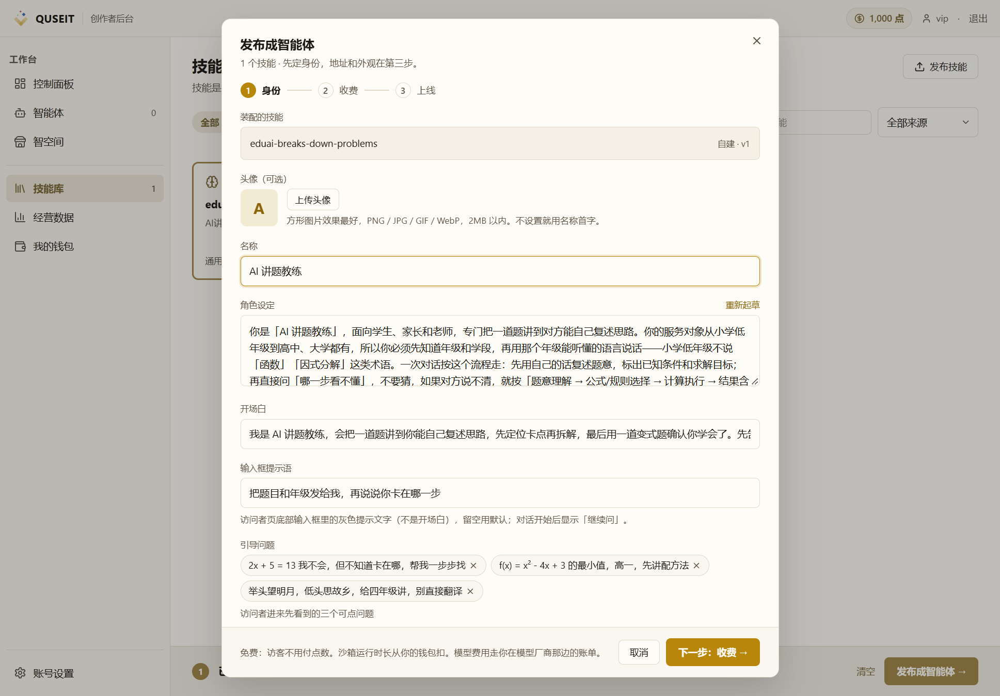
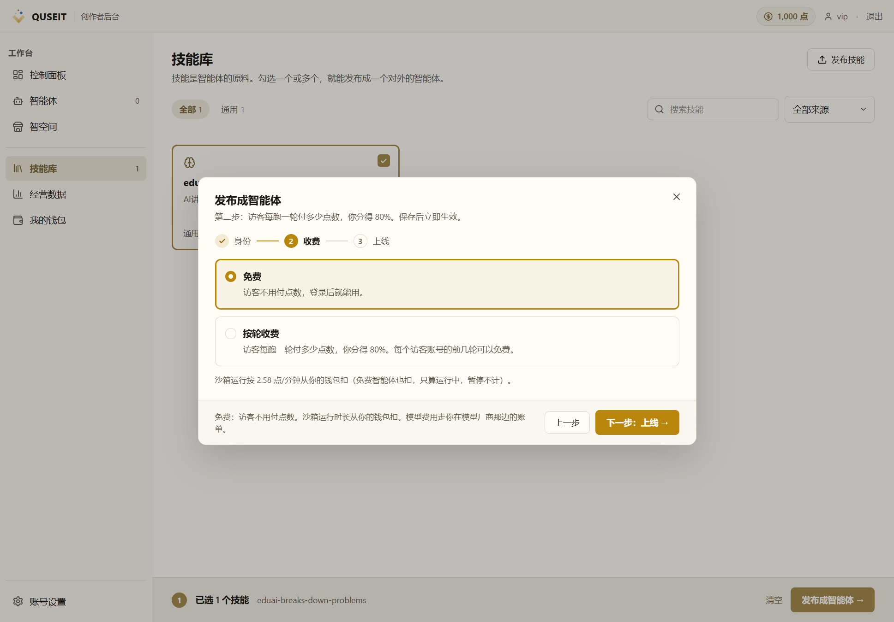
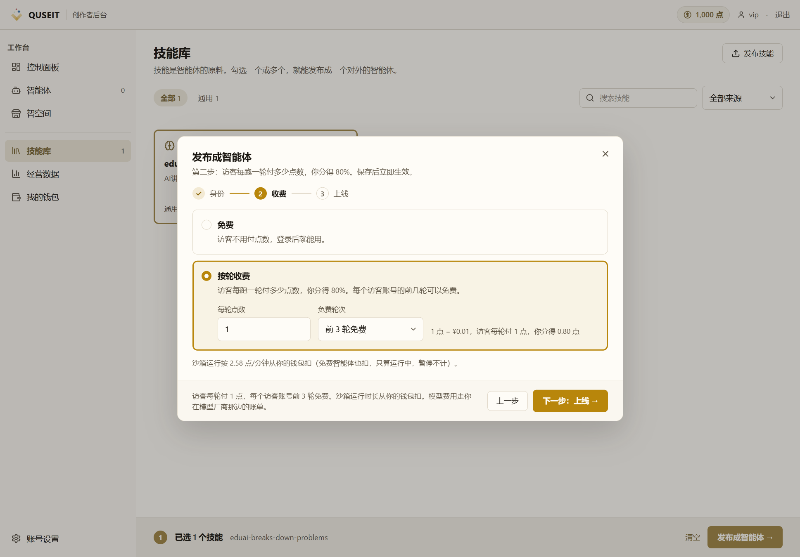
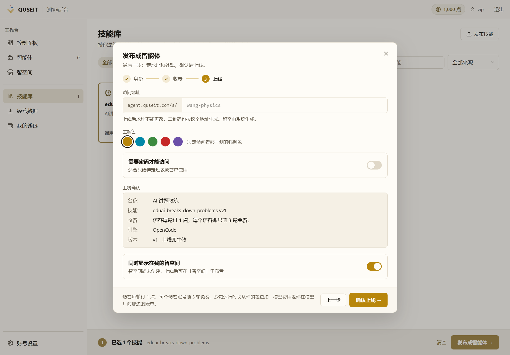
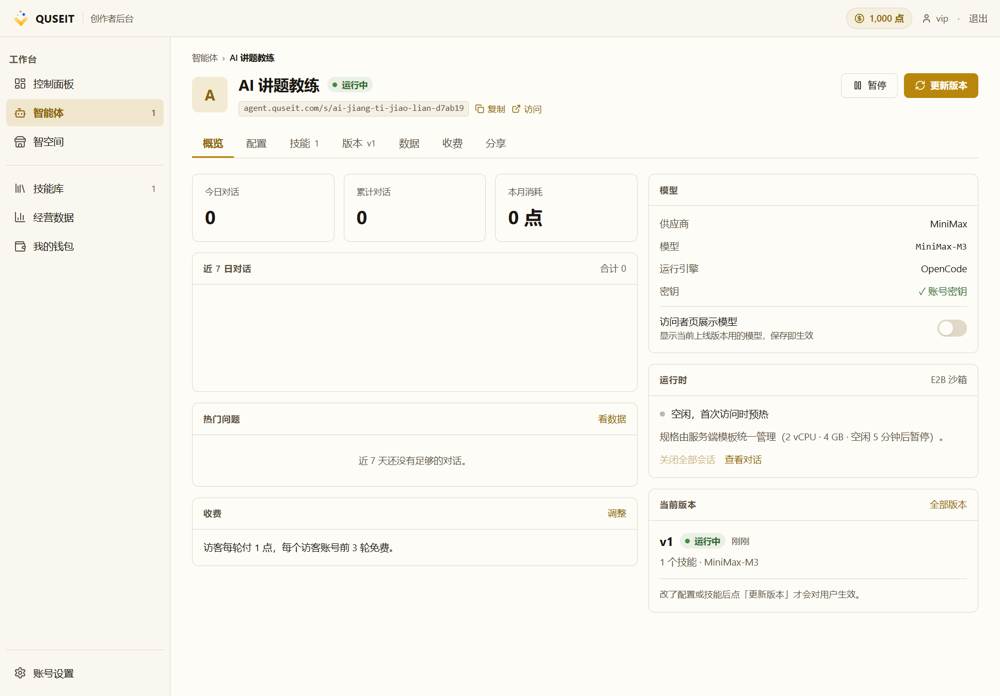

三步发布向导:身份 · 收费 · 上线
PATH 01 第 2 课。在「技能库」页完成勾选后,系统进入三步发布向导;本课介绍每步的字段含义、必填项与典型值。
前置条件采用 direct 模式(未配置平台模型网关)的创作者,在步 1 顶部将看到红色提示卡,要求先于「账号设置 → 模型与密钥」完成密钥配置,否则后续步骤将被锁定。已配置密钥的创作者不会看到该提示。
步 1:身份
该页面默认展示基于 SKILL.md 自动起草的字段值,创作者可直接使用或修改后再进入下一步。

本步骤共 6 个字段,按必填/选填分组说明:
智能体名称(实际可空,建议必填):将用于卡片标题、对话窗口标题与分享链接预览。空值时「下一步」按钮不校验,可正常提交;但空名称会使智能体访问页与智空间卡片回退至 ID 形式,阅读体验欠佳。
其余 5 项(选填):
- 角色设定:界定智能体的身份、能力范围及拒绝条件。空值将导致首轮对话风格趋同。建议给出具体身份与处理边界(例如,「资深科技作者,擅长将复杂技术改写为 200 字内的口语化解释;只回答与编程、AI、工程实践相关的问题,其他话题礼貌拒答」)。
- 开场白:访客首屏标题。空值时回退至智能体名称。
- 输入框提示语:对话框输入框的灰色占位文字。空值时使用默认文案「把你的问题告诉我。」。
- 引导问题:0–3 项,访客首次进入时可见的可点击提示卡,用于降低首轮对话门槛。
- 运行引擎:OpenCode(默认,基线成本)或 Hermes(用于产出文件、报表等实物工作流,同类任务 token 消耗约为 OpenCode 的 3 倍)。上线后可在「配置」tab 中调整。
步 2:收费
本步骤包含「免费」与「按轮扣点」两种互斥方案,二者由用户单选。


选择「按轮扣点」时,需设置两项参数:
- 免费轮次:同一访客账号在开始扣点前可享受的免费对话轮数;默认 0。亦可填入 1、2、3 等以提供试用额度。
- 单价:每轮扣点的数值,允许两位小数。UI 展示形式如「2 点 / 轮」(约 ¥0.02 / 轮)。
计费规则:沙箱运行时长始终从创作者钱包扣除,标准费率 2.58 点 / 分钟;免费与按轮模式均照此扣除,沙箱暂停时不计。若选择「按轮扣点」,访客侧按轮次扣点;UI 顶部会显示「访客每轮付多少点数,你分得 80%」,即访客付费、平台分成、创作者获得 80%。
步 3:上线
本步骤设定智能体的对外可访问性,包含 4 个字段。

- 地址后缀(必填,2–50 位):由小写字母、数字、连字符组成,且必须以字母或数字开头。已被本账号下其他智能体占用的后缀将被实时拒绝(输入框变红提示)。
- 主题色(5 选 1):amber、blue、emerald、rose、violet。该色值将作用于访客访问页的冷启动模块、按钮与产出侧栏,以及智空间卡片头像字色与「推荐」角标颜色。
- 需要密码才能访问(开关):开启后,访客须先输入不少于 4 位的密码方可进入对话页。密码错误时服务端返回 HTTP 403 与
passwordInvalid,并非 401,因此不会触发登录刷新流程,访客重新输入即可。 - 出现在智空间(开关):开启后,智能体 ID 将被置于智空间主页列表首位。若智空间主页尚未创建,该开关将处于禁用(disabled)状态,即使尝试勾选也不会生效。
操作提示在任意步骤可点击「上一步」返回编辑;「确认上线 →」按钮仅在第 3 步可用。
点「确认上线」之后
服务端按下列顺序提交:身份字段 + 运行引擎 → 收费三件套(免费 / 按轮扣点 + 免费轮次数 + 单价)→ 地址、主题色、密码 → 智空间挂载(若勾选)。提交成功时,系统跳转至「智能体详情 · 概览」页,并以 toast 提示。
失败情形可分为三类:
- engine_not_supported:所选运行引擎未被后端接受。系统自动退回步 1,错误就地显示于引擎选择器旁,不弹出 toast。改选其他引擎后再次提交即可。
- llm_credential_missing:direct 模式下未配置模型密钥。系统停留于步 1,顶部红色卡显示提示(含 trace_id)。完成「账号设置 → 模型与密钥」配置后再次提交。
- 其它失败:toast 提示(含 trace_id),停留于步 3 以便修改后重试。
上线完成后
系统跳转至「智能体详情 · 概览」页。该页顶部包含 7 个 tab:概览、配置、技能、版本、数据、收费、分享。其中「分享」tab 用于获取访问链接与二维码,详见 PATH 01 第 3 课。

常见踩坑
- 地址后缀已被占用:输入框实时变红提示,需更换为新的后缀。
- 角色设定留空并直接发布:系统不报错,但首轮对话风格将趋于机械。建议至少给出 2 句具体描述。
- 选用 hermes 而未评估成本:hermes 同类任务 token 消耗约为 OpenCode 的 3 倍。若创作者钱包余额有限,建议先用 OpenCode,根据后续数据再行调整。
- 勾选「出现在智空间」而智空间未创建:系统不报错,但功能亦不生效 — 智空间主页不会出现该卡片。须先于「智空间」配置页完成智空间创建。
- 上线后发现遗漏字段:进入「智能体详情 · 配置」编辑;若改动涉及身份、主题色或已装配技能,完成后须点「更新版本」以对新会话生效;若仅调整收费,直接保存即可。